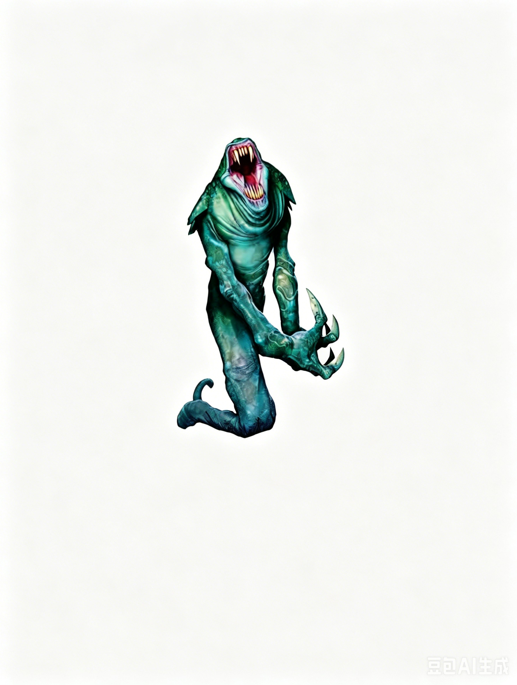

中型人形怪物 | 挑战级数 4这个生物下半身像蠕虫，头部像一条蛇，长有乳白色的眼睛，手臂延伸为巨大的骨爪。它将身体抬高至人类的高度，准备发动攻击。
娜迦萨 ―― 总是混乱邪恶。
| 生命骰 | 8d8+24（60HP） |
| 先攻 | -1 |
| 速度 | 10 英尺 (2格)，掘地 10 英尺 |
| 防御等级 | 17，接触 9，措手不及 17（�C1敏捷，+8天生） |
| 基本攻击/擒抱 | +8 / +10 |
| 近战攻击 | 2次爪击 +10 (每次1d8+2) 和 啮咬 +5 (1d4+1 外加毒素) |
| 占据/触及 | 5 英尺 / 5 英尺 |
| 特殊攻击 | 毒素（DC 17，造成2d4感知伤害/2d4感知伤害） |
| 特殊能力 | 目盲，盲感 60 英尺；免疫：凝视攻击、幻术 illusions、视觉效果；毒蛇之速 |
| 豁免 | 强韧 +7，反射 +5，意志 +7 |
| 属性 | 力量 14，敏捷 8，体质 16，智力 6，感知 13，魅力 9 |
| 技能 | 聆听 +15 |
| 专长 | 强韧加强、强化天生攻击（爪击）、技能专攻（聆听） |
| 语言 | 深渊语，通用语 |
| 进化 | 9�C15HD (中型)；详见下文 |
毒蛇之速 (Ex)：每当娜迦萨用两个移动动作移动其两倍陆地速度，或用整轮动作奔跑时，其陆地速度额外增加 40 英尺，从而可以用两个移动动作移动至多 100 英尺，或奔跑至多 200 英尺。
描述：娜迦萨是一种蠕虫状生物，由邪恶的精魂娜迦通过普通类人生物的身体创造而成。它们热衷于剖开猎物的身体，并以活物的痛苦和折磨为乐。这种残忍是它们在变成现有形态时所承受的巨大痛苦的最直观、最扭曲的体现。
娜迦萨没有视觉，因此依赖其敏锐的听觉来感知超出盲感 60 英尺范围的生物。它们足够聪明，能够警惕来自远距离的攻击。如果听到远处敌人的声音，娜迦萨会在地表下潜伏并从埋伏位置发动攻击。同样，如果遇到无法通过盲感察觉的对手，娜迦萨会掘地以保护自己。
守卫入口的娜迦萨通常藏身于门口的土壤下，等待伏击入侵者。巡逻的娜迦萨则彼此间保持一定距离，利用其盲感提高效率并相互保护。当它们与其娜迦主人同行时，守卫的娜迦萨会与入侵者进行近战，拖住对手，为娜迦从远处施法争取时间。
娜迦萨通常忠诚于创造它们的精魂娜迦，往往与主人同行或执行某些任务。它们巡逻主人领地，寻找入侵者。精魂娜迦也会将娜迦萨当作炮灰，投入到与强大敌人的战斗中。
守卫者 (EL 6)：一对娜迦萨在精魂娜迦巢穴的沼泽外围巡逻，寻找受害者。
清扫者 (EL 8)：四只娜迦萨在古老墓地的废墟中游走，守护附近主人神圣之地的入口。
娜迦之蠕 (EL 11)：在破败神庙的深处，一只精魂娜迦正谋划阴谋，六只娜迦萨在旁看守。
生态：娜迦萨是精魂娜迦通过魔法改造捕获的中型类人生物躯体而成的产物。这种邪恶的转化过程将其变为蠕虫状、长有尖锐爪子的生物。那些试图入侵精魂娜迦巢穴却失败的类人生物往往成为娜迦萨的原材料。战斗中昏迷的敌人经常被收集用于这种目的。
经历这种转化的幸存者完全失去了原本的模样。它们的双腿融合为蠕虫状的下半身，利用原腹部和双腿的肌肉量进行改造。手臂骨骼重塑并凝固成巨大的骨爪，头部拉长成蛇状，并失去了视觉。其毒素的原材料来自蛇类生物。
最后，也是最具侵略性的改造发生在受害者的心智上。精魂娜迦削弱了其智力，以摧毁潜在的奥术施法能力，同时抹去其过去的记忆和知识。然而，它们故意保留了一种痛苦的情感回响，使娜迦萨意识到自己失去了某些重要的东西。
环境：娜迦萨生活在温带沼泽地中，通常与控制它们的精魂娜迦共同栖居于古老的遗迹或破败的堡垒中。只有当它们的娜迦主人在战斗中被击败且它们幸存时，娜迦萨才会离开这些区域。
典型身体特征：娜迦萨的下半身如同蠕虫，移动时会伸缩拉长。其头部酷似大型毒蛇，带有毒牙，而肌腱发达的手臂末端是巨大骨爪。这些骨爪几乎让它们无法使用制造的武器。平均的娜迦萨身长约 7 英尺，体重在 150 到 250 磅之间。
阵营：娜迦萨永远是混乱邪恶的生物，由痛苦驱使，极度残忍。精魂娜迦的创造者鼓励它们憎恨其他生物，尤其是类人生物。
社会：娜迦萨在被转化后，唯一的慰藉就是与其他遭受类似痛苦的同类相伴。虽然它们完全失去了作为类人生物时的记忆，却被一种挥之不去的空虚感所笼罩：它们隐约感到某些重要的东西永远丧失了。由于这种感觉在所有娜迦萨中是普遍的，它们会彼此倾诉，并试图从中找到共鸣。没有谁比另一只娜迦萨更能理解它们所经历的痛苦。
精魂娜迦利用了这种失落感，刻意培养其创造成果，并假装理解它们的痛苦。娜迦萨因此将这些看似同情它们的"父母"视为目标和存在意义的来源。娜迦萨最快乐的时候是攻击进入主人领地的入侵者，因为战斗使它们能够将痛苦的迷茫转化为一种既发泄又残忍的怒火。
娜迦萨的创造过程包含对原始类人生物施放魅惑人类 (Charm Person)，使其在被转化为魔怪后依然忠诚于精魂娜迦。此法术被永久地编织进娜迦萨的存在中，使它们始终将精魂娜迦视为可信的朋友或亲近的亲属。任何暗示其主人与它们的痛苦有关的言辞都会激起它们的狂怒。
典型宝藏：单个娜迦萨通常没有宝藏，但它们会乐于为娜迦主人收集财富。一只精魂娜迦与 5 到 8 只娜迦萨同行时，其战斗等级的财宝为标准金币、双倍物品和标准装备；而精魂娜迦与 9 到 12 只娜迦萨同行时，其财宝为标准金币、双倍物品和双倍装备。
高级娜迦萨：娜迦萨通常通过增加生命骰数 (Hit Dice) 来成长，随着其痛苦的生命延续而变得更为强大，适合担任守卫任务。若它们接受职业等级训练，通常会选择战士或野蛮人，但它们从不进入施法职业。
等级调整：+2。
在艾伯伦：在艾伯伦，娜迦萨与精魂娜迦共存，最多见于阴影沼泽 (Shadow Marches)。在异变魔战争 (Daelkyr War) 留下的废墟中，娜迦萨守护着它们的主人，而精魂娜迦则囤积着艾伯伦龙晶 (Eberron Dragonshards)，并寻找打开次元封印的方法。此外，夸巴拉 (Q'barra) 的巴苏拉沼泽 (Basura Swamp) 也栖息着精魂娜迦及其邪恶创造物。
在费伦：在费伦，Sarrukh 创造了娜迦，使其对 The Art 充满好奇，同时也让它们极度以自我为中心。每只娜迦都渴望统治一个自己的领域，追求绝对权威。在 Chondath 和 Sespech 的娜迦流域 (Nagaflow) 洞穴中，许多独立的精魂娜迦在古老的娜迦繁殖地繁衍生息。其中的强大个体会用当地人创造大量娜迦萨。
在西部心地 (Western Heartlands) 的蛇之王国 (Najara)，精魂娜迦聚集于此，大约有十二名娜迦直接效忠国王伊巴纳杰 (King Ebarnaje)。这个邪恶国度的娜迦从类人生物奴隶中制造出娜迦萨仆从。
拥有 知识地城 (Knowledge (Dungeoneering)) 或 自然知识 (Knowledge (Nature)) 技能的角色可以了解更多关于娜迦萨的信息。成功的技能检定可揭示以下内容，包括更低 DC 的信息：
DC 14：这是一只娜迦萨，一种被扭曲成蠕虫状的恐怖人形怪物。此结果揭示所有人形怪物特性。
DC 19：娜迦萨的咬击带有毒素，会削弱受害者的精神敏锐度。
DC 24：娜迦萨的盲感范围为 60 英尺，并会通过掘地伏击对手。
DC 29：所有娜迦萨曾经是类人生物，但它们被邪恶的精魂娜迦转化，完全遗忘了自己的过去。